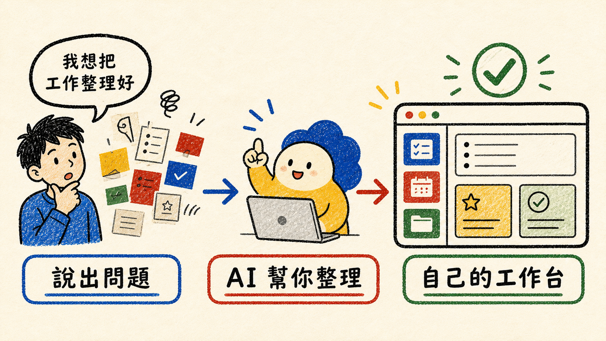
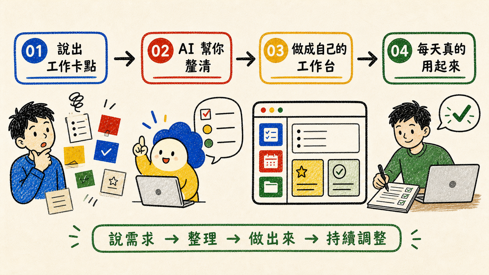

先準備一台專門運作控制台的電腦
用專用主機打造自己的個人控制台，讓 AI 幫你改善工作與生活
這不是把任何一台電腦或 NAS 拿來就能長期運作的工具。你需要一台專門長時間運作控制台的小電腦或主機，Windows 或 Mac 都可以；日常筆電只作開發測試，NAS 只作資料與備份。


這是什麼
它是在幫你把混亂的工作理清楚
它不是要你先學會一套複雜工具，而是把「容易忘記、一直重做、說不清楚」的事情，整理成你看得懂、做得到的流程。
先說出你遇到的事
例如：「我常常忘記哪些內容已經發布。」
一起找出真正卡住的地方
它會先問最重要的問題，不急著畫畫面或寫程式。
整理成下一步
把要做的事、完成標準和最後結果放在同一條路上。
看一個例子
例如：你總是忘記追蹤內容進度
你不用先想好完整規格，只要從最常發生的一件麻煩事開始。
「我常忘記內容進度」
說出實際遇到的困擾，不必使用專業名詞。
「你每天要追蹤什麼？」
確認哪些內容待處理、已發布，還有哪些結果要查看。
待處理 → 發布 → 查看結果
每一步都有清楚的動作，不再只停在一堆待辦事項。
知道下一次要做什麼
記下完成情況與下一步，之後可以接著使用和調整。
它把「我不知道怎麼整理」變成「我現在知道先做哪一步」。
這套系統要住在哪裡
長期使用，要準備一台專門運作控制台的電腦
如果你要做的是每天都要使用的個人控制台或 CEO 控制台，建議準備一台專門長時間運作的小電腦或主機。Windows 或 Mac 都可以；重點是讓控制台、資料與 AI 工作流程有自己的運作環境。
控制台的運作核心
這台電腦專門執行系統、保存必要資料，並讓 AI 有安全的工作入口。
日常筆電不優先
日常筆電可以做設定與測試，但不建議作為控制台長期運作的主機。
NAS 不當主要主機
NAS 可以保存檔案與備份，但不要把 NAS 當成控制台的主要運行主機。
最近很熱門的 AI 話題
AI 可以幫你做出系統，但主角是你的 Skill
現在的 AI 開發工具可以依照文字說明，協助做出網站、表單或工作系統。這個 Skill 的作用，是先把你的工作方式、需要的流程與完成結果說清楚，讓任何合適的 AI 工具都有明確方向。
先說清楚怎麼工作
把工作步驟、需要的資料、結果與確認規則整理好。
依照說明做出工具
可以請 WorkBuddy AI 或其他 AI 開發工具協助實作。
真的變成自己的系統
從最常遇到的一件事開始，逐步做成適合自己的工作台。
WorkBuddy AI 是可以參考的 AI 工作台；也可以使用其他 AI 開發工具，例如 Replit 或 Workbase，把你規劃好的系統做出來，再選擇適合的方式讓 AI 參與日常工作。
這個 Skill 本身不是獨立軟體，也不綁定某一個 AI 工具；它是背後的工作規則，協助不同 AI 理解你的需求，和你一起把工作或生活做得更順。
系統做出來只是開始。接下來要讓 AI 讀得到需要的資料、提出有根據的建議，並在你確認後協助完成工作。
直接開始
不用準備，先說一句你現在卡住的地方
你可以用自己的說法開始。Skill 會先協助你理解問題，再提出下一步；不會要求你先記住固定提示詞。
這裡用起來不太順，我常常忘記追蹤內容發布進度。
AI 會先整理草稿和建議；正式寫入資料、發布內容或通知他人，都會等你確認後才進行。
看完首頁了嗎？